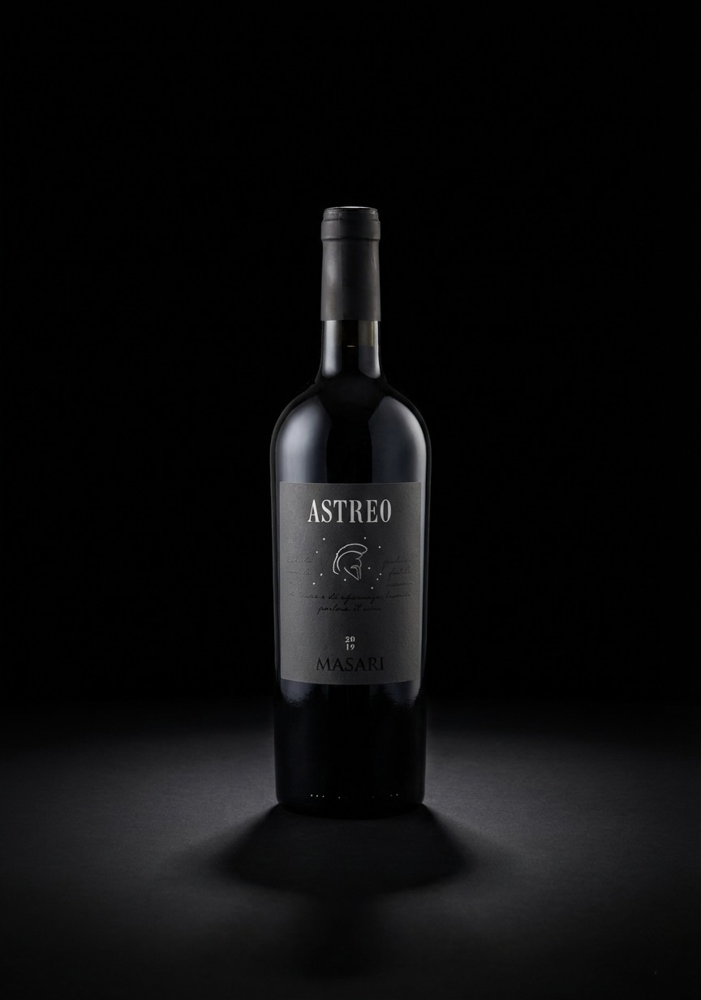

Nel 2024, circa venti ex-allievi del corso Astraios 19-22 hanno dato vita ad Astreo per lasciare un segno concreto nella scuola che li ha cresciuti. Il ricavato ha permesso la donazione del pianoforte a coda per la sala di musica e il progetto continua come iniziativa di tutti i morosiniani, aperta a idee e contributi per le prossime edizioni.

Edizione 2024
Astreo, il nostro sogno.
Astreo è il progetto nato dal corso Astraios 19-22 della scuola navale Morosini di Venezia: un vino creato seguendo ogni fase, dalla vendemmia all’etichettatura, per lasciare un impatto positivo sulla nostra scuola, e in futuro, sul mondo.
Storia
Un progetto che parla di Fratellanza e Valori
Il vino
Astreo
- Tipo
- Taglio bordolese: 50% Cabernet, 50% Merlot.
- Filiera
- Seguita dagli ex-allievi in ogni fase, dalla vendemmia all’etichetta.
- Qualità
- Masari ci ha affiancato e garantisce la qualità, tra le migliori cantine d’Italia.
- La prima edizione (2024) è stata dedicata a
- L’acquisto di un pianoforte a coda per la sala di musica, ora a disposizione di tutti gli allievi.


Il dono
La consegna del pianoforte
Il ricavato dell’edizione 2024 ha permesso la consegna del pianoforte a coda al Morosini, un dono per gli allievi di oggi e di domani.
- Solidarietà: ogni bottiglia sostiene un bene comune.
- Cultura: lo strumento invita a suonare e condividere musica.
- Memoria: il lascito del corso Astraios e di tutti coloro che hanno contribuito resta vivo nella scuola.
- Continuità: il progetto proseguirà con nuove edizioni.
Seconda edizione 2026
Una biblioteca per un orfanotrofio di bambine in India
Quest’anno Astreo vuole raccogliere fondi per donare una biblioteca a un orfanotrofio di bambine in poverta assoluta in India.
Il progetto nasce in collaborazione con Anna4Children, che ha costruito e mantiene l’orfanotrofio. Siamo entusiasti di poter contribuire, nel nostro piccolo, a questo grande progetto e siamo profondamente ispirati dalla loro storia.
Obiettivo 1000 bottiglie
90/1000
9%
L’obiettivo di quest’anno è raccogliere un netto di 8.500 euro per completare il progetto.
/whatsapp%20image%202026-02-25%20at%2023.54.48.jpeg)
/whatsapp%20image%202026-02-25%20at%2023.55.59.jpeg)
/whatsapp%20image%202026-02-25%20at%2023.59.23.jpeg)
Chi siamo
Ex-Allievi, scuola, comunità
Un progetto corale con ruoli diversi, uniti dallo stesso obiettivo.
gli ex-allievi
Un gruppo di ex-allievi ha seguito ogni fase del progetto.
- Vendemmia e lavoro in cantina.
- Etichetta, comunicazione e vendita.
Scuola
La scuola ha supportato l’iniziativa con spazi e coordinamento.
- Supporto organizzativo e istituzionale.
- Condivisione dei risultati con la comunità.
Comunità morosiniana
Il progetto è di tutti i morosiniani ed è aperto a idee e contributi.
- Proposte per migliorare le prossime edizioni.
- Lo Spirito che unisce tutti i Morosiniani.
Album fotografici
Le vendemmie di Astreo
Scopri le immagini delle vendemmie e della consegna del pianoforte: il progetto raccontato attraverso le nostre foto.
Vai agli album fotograficiContatti
Segui il progetto o contattaci
Vuoi collaborare o seguire Astreo? Scrivici o seguici sui nostri canali.
Riferimenti: astraios.it e @astreo.wine.
“Ad maiora”.